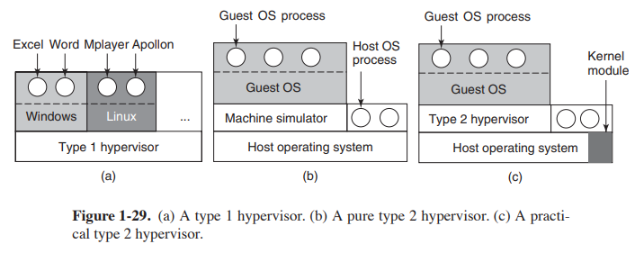

本文是北航《操作系统》课程预习教程的一部分。此版本由本人编写。
2024 年课程实验环境由 GXemul 更换为 QEMU，为了方便同学适应新的实验环境，在预习教程中特地新增《GDB：程序的解剖术》和《QEMU 模拟器介绍》两篇文章。
操作系统是直接运行在计算机硬件之上，向下管理硬件资源，对上为软件提供统一服务的一类程序。在本课程的实验中，为了开发和运行我们的 MOS 操作系统，我们必须具备一套支持操作系统运行的硬件系统，其中包括处理器、内存、外部设备（如磁盘）等多个组成部分。
然而，为每位同学都准备一套硬件设备是不切实际的。相较之下，使用模拟器则是一个更好的选择。模拟器能够模拟计算机硬件的行为和特性，使开发者可以在模拟的环境中运行和测试软件，而无需实际的物理硬件设备。
本实验所采用的模拟器为 QEMU，接下来我们就会对这一模拟器进行介绍。
什么是 QEMU
QEMU（Quick Emulator）是一个通用的开源的机器仿真和虚拟化工具，由传奇程序员法布里斯·贝拉（Fabrice Bellard）编写。QEMU 能够提供跨体系结构的硬件模拟，支持 x86、ARM、MIPS、RISC-V 等多种架构。
法布里斯·贝拉 是 QEMU、FFmpeg 等著名项目的创始人。他的工作涉足操作系统（QEMU）、编译器（Tiny C Compiler）、图形学（TinyGL）、通信技术（Amarisoft）、数学（Bellard’s formula）、音视频（FFmpeg）、人工智能（NNCP）等众多领域，并都做出过许多突出的贡献。是一位近乎全才的人物。
QEMU 拥有多种不同的使用方式，而在实验中我们所使用的主要是 QEMU 的系统仿真模式。在此模式中，QEMU 能够模拟处理器的执行过程以及各种硬件设备的行为，从而提供包括处理器、内存和外部设备在内的整机虚拟模型。在此模型之上，我们能够运行一个完整的操作系统，而不需要任何额外硬件的支持。
QEMU 提供了高度定制化的硬件模拟能力，使得搭建指定硬件平台的运行环境十分容易。并且 QEMU 也提供了使用 GDB 进行调试的原生支持，使程序的开发更加便捷。正因如此，QEMU 成为了底层开发领域十分重要的工具。
QEMU 的工作原理
这部分并不是本课程要求掌握的内容。各位可以按兴趣阅读。
在正式谈论 QEMU 的工作原理前，我们需要先了解一下虚拟化（Virtualization）技术。这里的虚拟化特指硬件虚拟化，是指隐藏真实的物理硬件，而由软件模拟出特定的硬件环境，在此环境中运行的操作系统就好像运行在实际的物理机器上一样。在此过程中，通过模拟产生的硬件环境称为虚拟机（Virtual Machine），实现虚拟化的程序称为虚拟机管理程序（Hypervisor）。本质上，虚拟机管理程序是一种中间件。
通过虚拟化技术，我们可以屏蔽底层硬件的差别，从而在单台物理设备上运行许多不同的操作系统环境，充分利用硬件资源。虚拟化产生的硬件环境也很容易在不同设备间迁移，这也利于系统的管理和维护。
根据虚拟化实现方式的不同，虚拟机管理程序分为第一类虚拟机管理程序（Type 1 Hypervisor）和第二类虚拟机管理程序（Type 2 Hypervisor）。
- 第一类虚拟机管理程序直接运行在硬件之上，如下图 (a) 所示。此时虚拟机管理程序实际上占据了类似操作系统的位置，整个物理机被其分割为多个虚拟机。
- 而第二类虚拟机管理程序则运行在操作系统之上，是操作系统中的应用程序，如下图 (b) 所示。其中称运行该虚拟机管理程序的操作系统所处的机器为宿主机（Host），而管理程序中的虚拟机则为客户机（Guest）。由于第二类虚拟机管理程序采取了软件模拟处理器、解释执行机器码的方式，所以也被称为模拟器（Simulator）。
第一类虚拟机管理程序主要在企业数据中心或服务器中使用。常见的产品包括 KVM、VMWare ESXi 等等。而第二类虚拟机管理程序则通常在个人计算机上使用，以便能在运行虚拟机的同时执行其他进程。常见的产品包括 VMware Workstation、Oracle VirtualBox 等等，其中也包括 QEMU。

图片来自 Andrew S. Tanenbaum - Modern Operating Systems (4th Edition)
现在我们说回 QEMU。QEMU 通过软件实现了对硬件的模拟，因此属于第二类虚拟机管理程序。但是和许多第二类虚拟机不同的是，QEMU 实现的是指令集架构级别的虚拟化。因此 QEMU 能够在一台机器上运行不同体系架构的程序。
实现第二类虚拟化的最简单方法当然是实现一个解释器并不断读入机器码，根据指令模拟处理器的行为。但是这样做的性能实在太低。因此 QEMU 采用了动态二进制翻译（Dynamic Binary Translation）机制，以一种中间代码作为中介，将客户机架构的机器码运行时翻译（Just-In-Time，JIT）为宿主机架构的机器码形式，并将翻译结果交由宿主机的处理器直接执行。因而 QEMU 在不同的体系架构下也具有不错的性能。QEMU 的这种虚拟化加速方式称为 TCG（Tiny Code Generator）。
此外，QEMU 还可以使用其他虚拟机管理程序进行加速。其中最常见的是使用 KVM（Kernel Virtual Machine）。KVM 是 Linux 的一个内核驱动模块，采用了硬件辅助的虚拟化技术，能够让 Linux 主机成为一个虚拟机管理程序。此时虚拟机管理程序直接位于硬件之上，因此属于第一类虚拟机管理程序。
由于不需要经过操作系统，能够直接访问硬件资源，所以 KVM 的性能要优于纯 QEMU。当 QEMU 配合 KVM 使用时，会由 QEMU 负责 I/O 虚拟化，而 KVM 负责处理器和内存虚拟化。这种方法相较于直接使用 QEMU，可以极大提高性能；而相较于直接使用 KVM，又获得了强大的跨体系架构能力。因此二者相互配合，能够发挥自身的优势，相得益彰。这种加速方式对应了上图 (c)。
QEMU 的使用
在实验中我们已经将所有需要用到的 QEMU 操作写到了 Makefile 中，因此如果只是为了完成实验，各位同学完全不需要了解 QEMU 的使用方法。
不过更多了解一下 QEMU 也没有什么坏处，反而可能会使你对操作系统有更深的认识。所以在这一小节中，我们就通过在 QEMU 中执行 MIPS 裸机环境下的 Hello, world 程序，使各位同学了解内核程序在 QEMU 中的运行。
- 下面的内容各位同学可以在自己跳板机的实验环境中完成，这样一来就不需要配置繁琐的开发环境了。
- 另外如果各位同学是在开始实验前阅读的本篇内容，则下面的源代码不需要理解具体含义。
在裸机环境下的一个 Hello, world 可执行程序可以是下面的形式：
// minimal_hello_world.c
void printch(char ch) { *((volatile char *)(0xB80003f8U)) = ch; }
void print(char *str) {
while (*str != '\0') {
printch(*str);
str++;
}
}
void __start() {
print("Hello, world!\n");
while (1) {
}
}
需要注意，我们在源代码中没有定义
main函数。__start函数才是程序的入口。
之后我们就可以编译该文件了。只需要使用交叉编译器 mips-linux-gnu-gcc 执行如下命令
$ mips-linux-gnu-gcc \
-EL \
-nostdlib \
-o hello_world.elf \
minimal_hello_world.c
编译产生的目标程序为 hello_world.elf。接下来我们使用 QEMU 运行该文件。
在这里要简单介绍一下 QEMU 的命令。所有的 QEMU 命令都为 qemu-* 的形式。对于某一体系架构下的模拟，需要使用 qemu-system-* 命令。如对于小端序的 mips 架构，对应的命令为 qemu-system-mipsel。此外 QEMU 还提供了其他的一些命令行工具，如 qemu-img 就用于创建、转换和修改磁盘镜像。
为了运行我们的目标文件，需要使用 qemu-system-mipsel。运行下面的命令，我们就可以得到 Hello, world! 的输出。
$ qemu-system-mipsel \
-m 64 \
-nographic \
-M malta \
-no-reboot \
-kernel hello_world.elf
Hello, world!
根据代码，我们的程序在输出
Hello, world!后会进入死循环。此时需要先按下Ctrl + A，随后单独按下X，即可从模拟中退出。
介绍一下上面命令所用到的选项：
-m：用于指定虚拟机内存的大小。-nographic：表示模拟中不使用图形界面，而是使用串口输出-M：用于指定要模拟的目标机器，这里模拟的是 MIPS Malta 开发板-no-reboot：虚拟机会直接退出而不是重启-kernel：指定要启动的内核，这里就是我们的hello_world.elf
我们的例子中并不需要外设，但在 MOS 实验中还需要对磁盘进行模拟，因此还需要使用 -device 选项设定仿真设备。
在 QEMU 中使用 GDB 调试
本课程的实验采用 QEMU 作为实验环境，主要的原因就在于 QEMU 原生支持使用 GDB 进行调试，能够为同学们提供极好的调试体验。接下来我们还以上一小节中的程序为例，介绍在 QEMU 中使用 GDB 调试的方法。
我们建议各位在阅读下面内容之前先了解关于 GDB 的使用方法，可以参考《GDB：程序的解剖术》一文。
首先为了能够支持 GDB，我们需要在编译时加上 -g 选项以生成 Debug 版本的可执行文件。
$ mips-linux-gnu-gcc \
-g \
-EL \
-nostdlib \
-o hello_world.elf \
minimal_hello_world.c
接下来我们要在 QEMU 模拟时启用 GDB 调试功能。这需要在 qemu-system-mipsel 命令中加入 -s -S 两个选项。其中 -S 选项用于让模拟器不要在一开始就启动处理器；-s 选项用于等待 GDB 连接到 1234 端口。
没错，GDB 和 QEMU 的协作是通过远程连接进行的，尽管目前我们只用一台主机运行 GDB 和 QEMU。这种调试方式称为远程调试，和我们平常使用 GDB 的方式不同，远程调试能够让我们调试位于远程主机上的程序。这为 GDB 提供了额外的灵活性，能够适应各种不同的调试情况（就比如现在这种情况）。
现在我们启动 QEMU。因为我们要在同一个终端中运行 QEMU 和 GDB。所以 QEMU 需要在后台运行。这时我们必须将其标准输入重定向为 /dev/null。
$ qemu-system-mipsel \
-s \
-S \
-m 64 \
-nographic \
-M malta \
-no-reboot \
-kernel hello_world.elf \
< /dev/null \
&
使用 ps 命令查看当前终端下运行的进程，可以发现我们刚刚启动的 QEMU。
$ ps
PID TTY TIME CMD
248 pts/3 00:00:00 bash
2708 pts/3 00:00:00 qemu-system-mip
2793 pts/3 00:00:00 ps
接下來我们启动 GDB。但是需要注意，我们的实验环境是 x86 架构，而要调试的程序是 mips 架构。按说调试程序也应当像编译程序或模拟程序时一样，需要使用特定架构的编译器和模拟器，是这样吗？
确实如此，gdb 命令本身只能用于调试当前处理器架构的程序，就像 gcc 只能编译当前处理器架构的程序。为了能够调试 mips 架构下的程序，我们的实验环境在 gdb 之外也安装了 gdb-multiarch。
gdb-multiarch 是 gdb 的多架构版本，提供了调试不同架构下程序的功能。不同于交叉编译器，gdb-multiarch 一次性提供了对很多架构的支持，包括 mips 架构。如果我们使用 gdb-multiarch 命令进入 GDB 环境，输入 set architecture 并再按 Tab 键自动补全，则会发现有多达 200 种补全选项。
$ gdb-multiarch
...
(gdb) set architecture
Display all 200 possibilities? (y or n)
gdb-multiarch 的使用方法和 gdb 基本相同。因此对 gdb-multiarch 的说明就到此为止。现在我们使用命令 gdb-multiarch hello_world.elf 进入调试环境。
$ gdb-multiarch hello_world.elf
...
Reading symbols from hello_world.elf...
(gdb)
但此时我们还没有连接到 QEMU 的 1234 端口。想要进入 GDB 的远程调试模式需要使用 target remote <address> 指令。当下 <address> 应为 localhost:1234。输入该指令后，我们成功进入了 QEMU 的运行环境中。
(gdb) target remote localhost:1234
Remote debugging using localhost:1234
0xbfc00000 in ?? ()
gdb命令提供了-ex <command>选项用于在启动 GDB 后执行指定的指令。所以如果想要一条命令直接进入 QEMU 远程调试环境，可以使用gdb-multiarch hello_world.elf -ex "target remote localhost:1234"。这样将在启动 GDB 后自动执行target remote localhost:1234指令。
需要注意，在 QEMU 调试时我们并不能使用 run 或 start。这里我们用断点加上 continue 来进入到 __start 函数的位置。
(gdb) b __start
Breakpoint 1 at 0x4001e8: file minimal_hello_world.c, line 11.
(gdb) c
Continuing.
Breakpoint 1, __start () at minimal_hello_world.c:11
11 print("Hello, world!\n");
此后的工作就和一般的调试过程相同了，这里不再赘述。唯一需要注意的是在退出前请使用 kill 指令杀死 QEMU 进程。如果直接退出的话，则只是 GDB 进程与 QEMU 进程 “分离”（detach）。这时 QEMU 进程还会继续运行，并且会持续占用 1234 端口，导致无法调试新的 QEMU 进程。
如果退出前没有杀死 QEMU 进程也不要慌。可以使用
ps -ef | grep qemu查找所有的 QEMU 进程。$ ps -ef | grep qemu yourname 717 246 0 13:43 pts/3 00:00:00 qemu-system-mipsel -s -S -m 64 -nographic -M malta -no-reboot -kernel hello_world.elf yourname 1118 246 0 13:49 pts/3 00:00:00 grep --color=auto qemu其中第二列为进程的标识符（PID），从以上输出我们可以得知 QEMU 进程的 PID 为 717。现在只要手动结束该进程即可，这需要使用
kill -9 <pid>命令。
kill命令用于向<pid>指定的进程发送信号，-9表示发送的第 9 号信号。我们可以使用kill -l查看所有信号的名称和编号。从中我们可以得知，第 9 号信号为SIGKILL。该信号用于结束进程的运行（也就是 “杀死” 进程）。$ kill -l 1) SIGHUP 2) SIGINT 3) SIGQUIT 4) SIGILL 5) SIGTRAP 6) SIGABRT 7) SIGBUS 8) SIGFPE 9) SIGKILL 10) SIGUSR1 11) SIGSEGV 12) SIGUSR2 13) SIGPIPE 14) SIGALRM 15) SIGTERM ...现在我们使用
kill -9 717就可以杀死 QEMU 进程了。$ kill -9 717 [1]+ 已杀死 qemu-system-mipsel -s -S -m 64 -nographic -M malta -no-reboot -kernel hello_world.elf < /dev/null当然各位也可能觉得这样还是太麻烦了。我们也可以将查找 QEMU 进程的 PID 的操作和发送
SIGKILL信号的操作结合在一起。这样就只需要一条指令：pkill -9 qemu。$ pkill -9 qemu [1]+ 已杀死 qemu-system-mipsel -s -S -m 64 -nographic -M malta -no-reboot -kernel hello_world.elf < /dev/nul